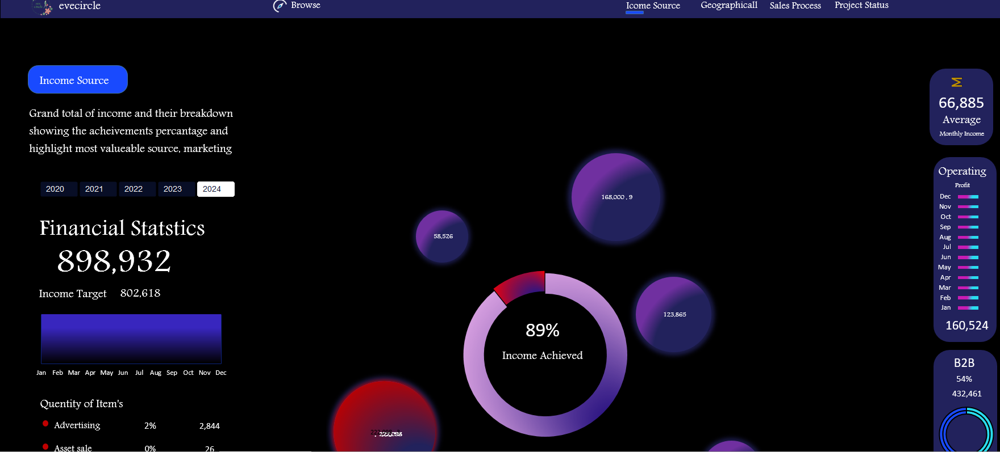

Excel Dashboard
Excel has been the foundation of my work as a data analyst. I've used Excel's capabilities through painstakingly created dashboards to identify trends and reveal important insights in a variety of fields, from sales and revenue analysis to HR and road management. I've enabled teams to make educated decisions, optimizing tactics and promoting growth by turning raw data into visual tales. Excel continues to be my go-to tool for illuminating the road to data-driven success.

In this project, a challenge arose: more than 3,000 rows of sales data stretching over two years. The goal was clear—to construct an expansive data dashboard—armed with Excel's formidable tools: pivot tables, VLOOKUP, and filters. This dashboard aimed to transcend mere numbers, unveiling revenue across regions, employees, and stores. It delved deeper, unveiling intricate links between managers and salespeople, decoding the correlation between total transactions and revenue, and shedding light on nuanced product-based earnings. Guided by Excel, the analytical journey uncovered priceless insights destined to shape strategic decisions.

The goal of the mission, which covered four years' worth of firm data, was to examine finances and compare intended and actual income. Excel's prowess was used to filter information on a monthly basis, analyzing revenue by product, average earnings, and calculating operating profit. The dashboard further highlighted the contrast between B2C and B2B revenue streams by include these significant KPIs. Excel enabled informed decisions by meticulously analyzing the company's financial journey.

With a dataset of 307,974 rows on road accidents, a journey began to craft an Excel dashboard. Initial KPIs highlighted fatalities, serious, and slight casualties by car type. Insights deepened, narrowing to casualties by vehicle type, monthly occurrences, road area, and light condition. This dashboard unveiled road safety trends, empowering data-driven decisions in safeguarding lives.

An Excel dashboard emerged, uniting diverse KPIs: total and active employees, attrition rates, average employee age, and gender distribution. The canvas deepened, capturing attrition nuances by education, job role, age group, and marital status. Filters unveiled specific departments like HR, Sales, and R&D, while qualifications added another layer of understanding. Through this dashboard, employee stories were unveiled, guiding nuanced decisions across the organization.